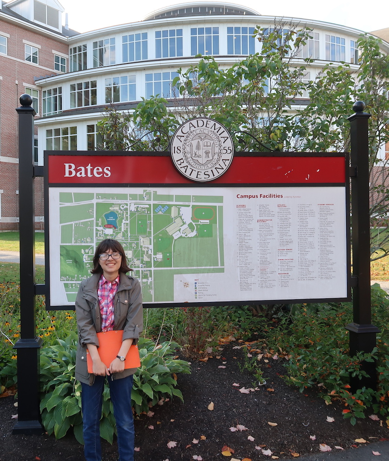
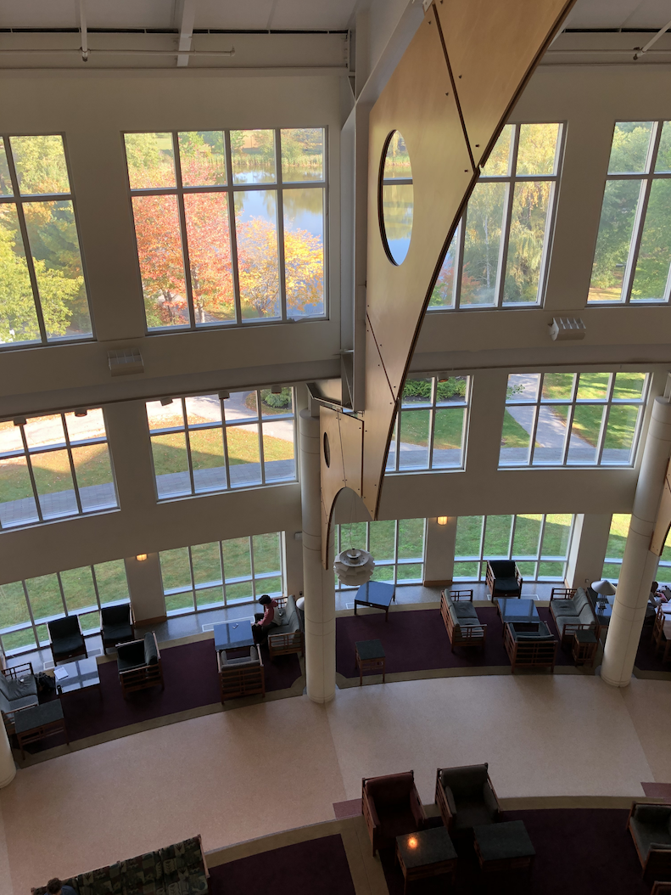
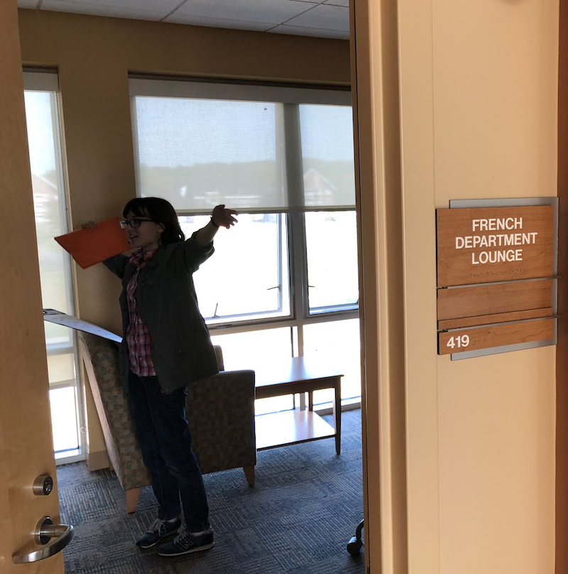
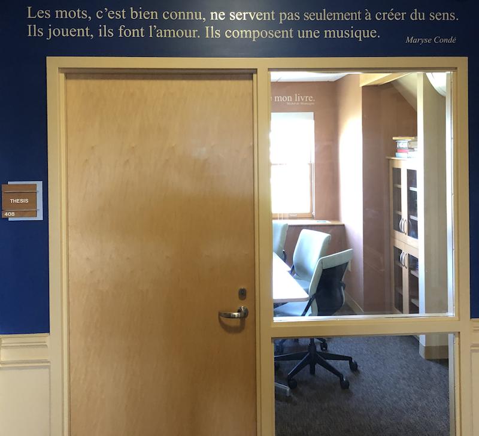

Oops. This has been unpublished in draft since October. But since then, my daughter did apply to Bates early decision, and was admitted to the class of 2024!
But here's my take from back in October.
On September 26-28, we returned to New England to continue our visits to colleges, and a key aspect of this trip was to see if my daughter's very strong interest in Bates is still solid. Why? Because she might apply there "early decision." We also visited Middlebury, Mount Holyoke, and Amherst. I may get to these in later posts. Oh, and we had a couple of quick drive-bys: Hampshire and Goddard Colleges. I wish we could have lingered, but we had some car trouble that made our schedules tight.
In this post, I want say a few words about Bates . . . then bloviate a bit on early decision.
Bates was the third college I blogged about in this series, and back in August of last year, I concluded that it's a "A great school that has perhaps had to be a bit more cunning and creative about costs than their cohort."  Everything we saw and experienced at Bates confirmed that opinion. C is still bullish on Bates. Me, too. I'll just pick out a few things.
This time we skipped the tour. Instead, we snooped around the campus on our own, which was quite rewarding. The best modern building at Bates is Pettengill Hall.  On the tour last year, we got to see the main floor; the tour guide said that in winter it's like a "snow globe" with its big windows and pretty views. This time we discovered that on the upper floors, there are cozy lounges and great views of the interior.
Another feature of Bates that really impressed me is that seemingly every department has a lounge.  I like the idea that each department has a little retreat where they can show off some collections related to the field and provide a shelf of faculty-authored books. So, for instance, in the German and Russian Department, we saw a case with some old Samovars. It's a nice touch. I have seen a bit of that at Grinnell, but at Bates it seemed to be systematic. We were there while Bates was in session, but I don't think we saw anyone hanging out in a lounge. I can tell you that were I a student again, I'd surely be a denizen of the English Department's lounge! The most interesting space we saw was the French department, which has decorated the walls with sentences from famous works of literature.  One felt that one was "inside" French. I recall that Montaigne decorated his reading room with snippets of Latin from the ancients; maybe the department was echoing that.
Last time I worried a bit about the endowment. I have come to believe that this is a non-issue for a couple of reasons. First off, Bates has apparently been quite successful with their current capital campaign. Another sign that their budgets are not constraining them is that there is a new science building going up, due to open when my daughter would be in her sophomore year. For Bates, this is important, because judging from the existing buildings, they don't have the powerhouse labs you see at, say, Grinnell, Amherst, and Mount Holyoke. But "new" will help, and what I expect to see is not quite the obsession with research you see at these other schools, but rather an even stronger integration of the sciences into the liberal arts. Bates tends to do things in their own way, such as their strategic naming of their new department, "Digital and Computational Studies." My prediction is that a new science builidng at Bates will be very accomodating to the current debates around ethics in the sciences as well as the history of science, both areas where you need that liberal arts approach to get the most integrative educational experience. The fact that Bates doesn't have money to blow means that they have to be ever more clever in spending what they have.
So this whole "early decision" thing . . . The idea is that if a kid is sure that Somewhere College is the exact right place, then the kid applies "early decision" to that one school. If accepted, attendance is required. You can't then apply to Someother College and get in there and rescind your attendance from the school to which you applied early decision. No. ED is binding.
So I just want to jump to the cui bono. Clearly colleges benefit big time. Here's what Wikipedia says:
Schools which offer an ED admission plan look to benefit from a near certainty that the admitted applicant will attend. As a result, the admission yield is increased by admitting more students at the ED stage. The timing of the ED process also helps admissions offices spread the work of sifting through applications throughout more of the school year. [...] Many schools offering ED regularly fill over 50% of their class through ED admits.
Got that? So colleges get a better handle on class makeup and can effectively "lock in" their student body earlier. The chances of being admitted ED are higher than for the regular admissions process. What's more, as James Fallows writes in a seminal article on ED in The Atlantic, "The more freshmen a college admits under a binding ED plan, the fewer acceptances it needs from the regular pool to fill its class—and the better it will look statistically." No college would admit the following, but if the college is "need aware," meaning that the college can look at the income of the parents as a part of the consideration to admit, then the college might also lock in more cash instead of competing for students later on through the offering of aid and scholarships. Which students benefit from this? The logic means that the early decision kids are the rich kids, because they don't care as much about the variety of aid packages they might get.
Remember that I noted that the admit percentage is higher for ED. So if you're a student who really wants to lock in a school, you're going to apply ED to get that advantage. What is really worrisome here is that ED may be prone to gaming, and it distorts the very proposition that your ED school is the one you really want to go to. An article in the Washington Post notes:
Sometimes admission to that first-choice school is so tough to obtain, even in an early application, that it makes more sense to apply early decision to a second choice, or even a third choice. “You’ve got one chip,” Reider said. “One card to play. It’s an absolutely crazy system.”
Doesn't that seem a bit off? So my daughter, at least, will likely apply ED to what seems like her favorite school, and may have a higher liklihood of getting in. But one does wonder about increasing the chances by going for, say, Mount Holyoke (and I'm not knocking Mount Holyoke, just noting their statistics for ED). I suppose that Washington Post article, though, is about the kids who want to go to a really selective school like Harvard or Princeton. My daughter decided long ago that she'd rather go to a smaller place, and while still very selective, it's a different world from the top 5-10 most selective institutions.
comments powered by Disqus